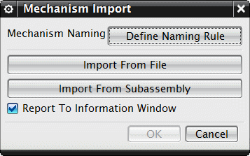

您可以在其它装配或子装配中重用与特定机构关联的运动对象(比如连杆、运动副、约束等等)。

您可以从外部 XML 文件或 NX 子装配中导入机构。
软件将巾可能把运动对象与几何体关联。
导入的对象储存在运动导航器的组节点中，这使您很容易就可以将运动仿真中的现有对象与导入对象区分开，由于软件将每次操作导入的对象储存在单独的节点中，因此也可以帮助您识别导入对象的不同来源。
要导入机构，右击运动导航器中的机构并选择导入→机构。